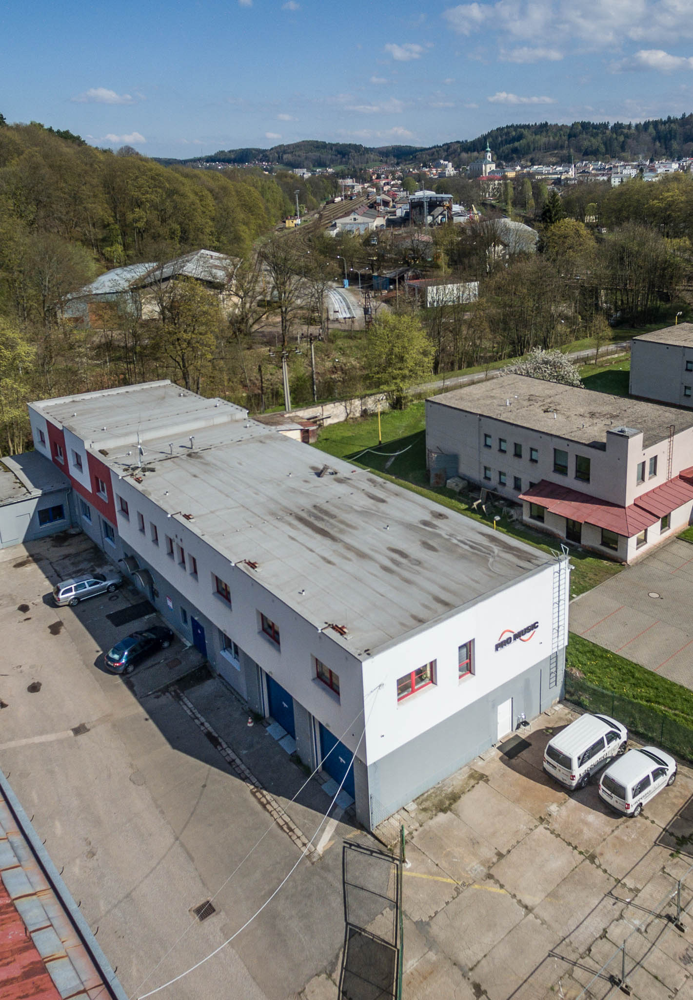

O společnosti
O společnosti
Kdo jsme?
Nabízíme
Partneři
Technologie
Cyklistický tým

OD ROKU 1997
Sídlo Trutnov — prezentační sál, tréninkové prostory, servis
Kdo jsme?
Reference
Touring / Rental / Produkce
Turné
Koncerty
Festivaly
TV & broadcast
Eventy & korporát
Všechny projekty
Instalace
Divadla & sály
Arény & stadiony
Kluby & venues
Hotely & bary
Konferenční
Kina · sakrální
Všechny instalace
Ze světa
Zahraniční projekty
Světové instalace
Jak to děláme
Co řešíme
Fáze instalace
REFERENCE
Rammstein — Europe Stadium Tour
Zobrazit
Značky
Školení
Novinky
Second Hand
Kontakt
Probrat projekt →
Probrat projekt